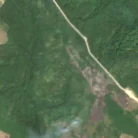
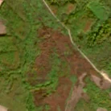

17,8 ha de pădure schimbată lângă Povârgina
Între 29 iulie 2026 și 5 august 2026, pe aproximativ 17,8 ha de pădure din orașul Făget, lângă Povârgina, județul Timiș, imaginile Sentinel-2 arată că vegetația a dispărut sau s-a schimbat puternic. În registrul public există o autorizație de tăiere pentru acest loc.
Autorizația de tăiere
probabil cu autorizație
Am găsit o autorizație de tăiere pentru locul ăsta, dar registrul nu ne lasă să confirmăm că acoperă exact tăierea pe care o vedem. Amenajamentul nu publică harta parcelei autorizației, deci nu știm exact unde e. De cele mai multe ori o acoperă.
Ce se vede în poze: În poza detaliată din 2017 zona marcată nu este o pădure deasă, ci un amestec de copaci, tufișuri și porțiuni deschise, cu un drum care o străbate. În poza «după» zona are o culoare roșiatică-brună, fără margini drepte de tăiere, ca o pășune sau un teren cu tufișuri care s-a schimbat de la sezon sau a fost curățat.


Înainte și după: Copernicus Sentinel-2, 10 m pe pixel, conturul zonei cu portocaliu. Poza detaliată (Esri World Imagery) e de acum 1–4 ani: arată ce era acolo înainte, nu tăierea.
Pe scurt
- Identificator
- 20260805_45892_22122
- Locul
- Povârgina, orașul Făget, județul Timiș (SIRUTA 156801)
- Coordonate (centru)
- 45.89238, 22.12218 · Google Maps · OpenStreetMap
- Suprafața
- 17,8 ha (din pixeli de 10 m; ± câțiva pixeli pe margine)
- Ultima imagine cu pădurea întreagă
- 29 iulie 2026
- Prima imagine cu schimbarea
- 5 august 2026
- Imagini în care se vede schimbarea
- 14
- Cât de sigur e semnalul din satelit
- ridicată
- Autorizația cea mai apropiată
- APV 2400141201710 · Ocolul Silvic Făget, valabilă 6 mai 2025 – 18 iulie 2025, la 0 m de zonă
- Terenul
- în afara amenajamentelor silvice publicate (pășune, mal de apă sau pădure privată fără amenajament în registru)
- Arie protejată
- Defileul Mureșului Inferior - Dealurile Lipovei
- Pădure pierdută în jur, alți ani
- 2023 (Hansen)
- Garda Forestieră
- Timișoara
Dacă vrei să verifici sau să sesizezi
- Pădurile din județul Timiș sunt în grija Gărzii Forestiere Timișoara, care controlează tăierile și dă amenzile.
- Autorizația găsită în zonă e emisă de Ocolul Silvic Făget.
- Formularul Gărzii Forestiere Naționale primește sesizări și fără nume. Trimite linkul acestei pagini, coordonatele și pozele. Dacă tăierea e în desfășurare, sună la 112.
- Autorizațiile și transporturile de lemn se pot căuta în Inspectorul Pădurii.
Pagina arată ce se vede din satelit și ce scrie în registrul public; nu e o dovadă în sine.
Cum citezi zona
Linkul acestei pagini nu se schimbă. Dacă zona iese vreodată de pe hartă, pagina rămâne, cu data și cu ce știam despre ea.
Pădurea RO, zona 20260805_45892_22122: 17,8 ha, Povârgina, orașul Făget, județul Timiș; schimbare văzută din satelit între 29 iulie 2026 și 5 august 2026. https://iliemihai.github.io/padurea-ro/zona/20260805_45892_22122/ (consultat la [data]). Date: CC BY 4.0.
Datele zonei: GeoJSON · toate zonele: date deschise · licența CC BY 4.0.
Istoricul zonei pe hartă
Starea se poate schimba când registrul publică o autorizație sau când analistul vede poze mai bune. O ținem aici, ca un link citat să arate și ce spuneam atunci.
Pe hartă cel târziu din 5 noiembrie 2026.
- 5 noiembrie 2026 – azi · probabil cu autorizație
Detalii tehnice, pentru verificare
De ce acest nivel de încredere:
- văzută schimbată în 14 imagini diferite
- peste 3 ha
- AI-ul vede pădure dispărută
- în poze, zona se schimbă vizibil față de pădurea din jur
Ce a văzut analistul cu context: Marginile zonei brune sunt difuze și urmează relieful și vegetația, fără rambleuri, depozite de lemne sau cioate vizibile la 10 m/pixel. Coronamentul din 2000 este de doar 42% în interior, iar în 2017 se văd goluri și pâlcuri de tufărișuri, ceea ce contrazice «pădure închisă» din WorldCover. Autorizația APV are suprapunere de 2% și a expirat în iulie 2025, deci nu explică schimbarea. Nu există fum sau culoare neagră (deci nu foc), iar pete brune similare apar și la sud în terenuri deschise; clasificarea rămâne incertă între pășune/tufărișuri și variație sezonieră.
- Placa Sentinel-2
- 34TER
- NDVI de referință
- 0.85
- NBR de referință
- 0.62
- Scăderea în pădurea din jur
- 0.07
- Persistență
- 0.95
- NDVI / NBR după
- 0.433 / 0.094
- Analistul de zi (model)
- taiere · 0.9 · claude-haiku-5-5
- Analistul cu context (model)
- pasune · 0.45
Cum se calculează fiecare: metodologia.
Pune harta zonei într-un articol
Copiază codul în articol (merge în majoritatea site-urilor de știri). Sau pune doar linkul: WhatsApp, Facebook și X arată singure poza zonei.